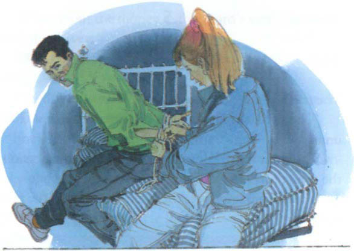

4
Có gì đang xảy ra?
Sheila và Charles đợi trong căn nhà cũ. Trời tối dần. Họ đi bộ trở lại ngôi nhà nhỏ và trốn sau một bụi cây. Một chiếc xe tải đậu gần cửa nhà nhỏ.
Họ đợi trong bóng tối. Đột nhiên, một người đàn ông vội vã đi qua con đường nhỏ. Anh ta gõ vào cửa sổ của ngôi nhà nhỏ. Cánh cửa mở ra nhanh chóng.
‘Mọi thứ đều ổn, Frank,’ người đàn ông ở bên ngoài nói. ‘Bill đã gọi điện từ London. Anh ấy đã bỏ thuốc ngủ vào cà phê của tên bảo vệ.’
‘Tốt,’ Frank nói. ‘Chúng ta có thể bắt đầu ngay bây giờ. Lấy những chiếc túi từ xe tải và mang vào nhà nhỏ.’

‘Có chuyện gì đang xảy ra vậy?’ Charles hỏi Sheila. ‘Bill đã bỏ thuốc ngủ vào cà phê của tên bảo vệ - điều đó có nghĩa là gì? Và trong những chiếc túi đó có gì?’
‘Tôi không biết,’ Sheila nói. ‘Nghe này - họ lại nói chuyện.’
‘Còn về anh chàng trẻ đó?’ một trong những người đàn ông hỏi Frank.
‘Chúng ta sẽ nhốt anh ta trong phòng ngủ ở tầng trên,’ Frank trả lời. ‘Anh ta bị trói chặt lắm. Ngày mai người ta sẽ tìm thấy anh ta. Đến lúc đó, chúng ta đã đi xa khỏi đây rồi.’
‘Paul đang ở trong nhà nhỏ,’ Sheila thì thầm với Charles. ‘Và anh ấy là tù nhân.’
Bốn người đàn ông mang tất cả các túi vào nhà nhỏ. Họ đóng cửa lại và khóa cửa.
‘Paul đang ở trong một trong những phòng ngủ ở tầng trên,’ Sheila nói. ‘Chúng ta phải giúp anh ấy.’
‘Bạn sẽ vào nhà nhỏ bằng cách nào?’ Charles hỏi. ‘Họ đã khóa cửa rồi.’
‘Tôi sẽ trèo lên đỉnh hiên nhà,’ Sheila nói. ‘Sau đó, tôi sẽ vào bằng cửa sổ.’
Sheila và Charles đã đợi nửa giờ. Sau đó, họ đi tới cửa chính một cách lặng lẽ. Không có đèn trong nhà nhỏ.
‘Giúp tôi lên, Charles,’ Sheila nói.
Sheila đứng trên đỉnh hiên nhà. Cô với lên và kéo cửa sổ. Cửa mở ra từ từ và phát ra tiếng động lớn. Sheila đợi vài phút. Không có chuyện gì xảy ra.
Cô mở toang cửa sổ. Rèm cửa bên trong đã đóng. Cô cẩn thận mở rèm và trèo vào phòng ngủ.
Trong căn phòng tối, Paul đang nằm trên giường. Anh ta bị trói chặt và có một miếng vải bịt miệng.
Sheila nhanh chóng tháo miếng vải bịt miệng.
‘Suỵ!’ cô nói. ‘Đừng lên tiếng. Có một số người đàn ông ở dưới nhà.’
‘Ổn rồi,’ Paul nói. ‘Chúng sẽ không nghe thấy chúng ta đâu. Chúng không ở trong nhà này. Chúng ở ngoài sân sau.’
Sheila từ từ tháo dây trói quanh người Paul.
‘Có chuyện gì đang xảy ra vậy?’ cô hỏi anh ta. ‘Những người đó là ai? Họ đang làm gì?’
‘Họ sẽ cướp một chuyến tàu đêm nay.’
‘Cướp một chuyến tàu á?’ Sheila ngạc nhiên hỏi.
‘Họ đã tìm thấy một đường hầm cũ phía sau nhà nhỏ,’ Paul nói. ‘Đường hầm dẫn xuống đường hầm xe lửa. Họ sẽ thay đổi tín hiệu trong đường hầm. Đèn tín hiệu sẽ chuyển sang màu đỏ và chuyến tàu sẽ phải dừng lại.’
‘Bây giờ thì tôi hiểu rồi,’ Sheila nói. ‘Ai đó đã bỏ thuốc ngủ vào cà phê của tên bảo vệ.’
‘Đó là một phần trong kế hoạch của chúng,’ Paul nói. ‘Chuyến tàu sẽ dừng lại trong đường hầm và tên bảo vệ sẽ ngủ quên. Những người đàn ông sẽ ăn trộm những túi tiền từ chuyến tàu và trốn thoát qua đường hầm.’

‘Nhưng những người đàn ông này đã mang các túi vào nhà nhỏ,’ Sheila nói. ‘Chúng dùng để làm gì?’
‘Những chiếc túi đựng đầy giấy,’ Paul nói. ‘Chúng trông giống như những chiếc túi đựng tiền. Những người lính sẽ không tìm thấy giấy cho đến sáng ngày mai. Đến lúc đó, những người đàn ông này đã đi xa khỏi đây rồi.’
‘Chúng ta có thể chạy đến bốt điện thoại,’ Sheila nói. ‘Chúng ta có thể gọi điện cho cảnh sát từ đó.’
‘Không đủ thời gian đâu,’ Paul nói. ‘Chúng ta phải ngăn những người đàn ông này lại. Chúng ta có thể đặt những viên đá nặng lên đường hầm. Khi đó, những người đàn ông không thể thoát ra được.’
‘Và Charles có thể chạy đến và gọi điện cho cảnh sát,’ Sheila nói.
Bây giờ tất cả các nút thắt đã được tháo gỡ và Paul đã được tự do. Họ trèo ra khỏi cửa sổ. Charles đang đợi họ trong bóng tối.